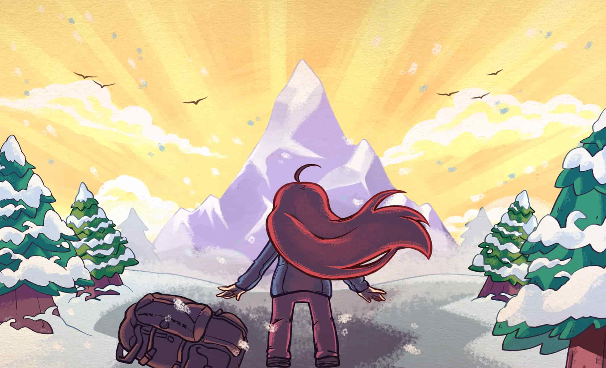
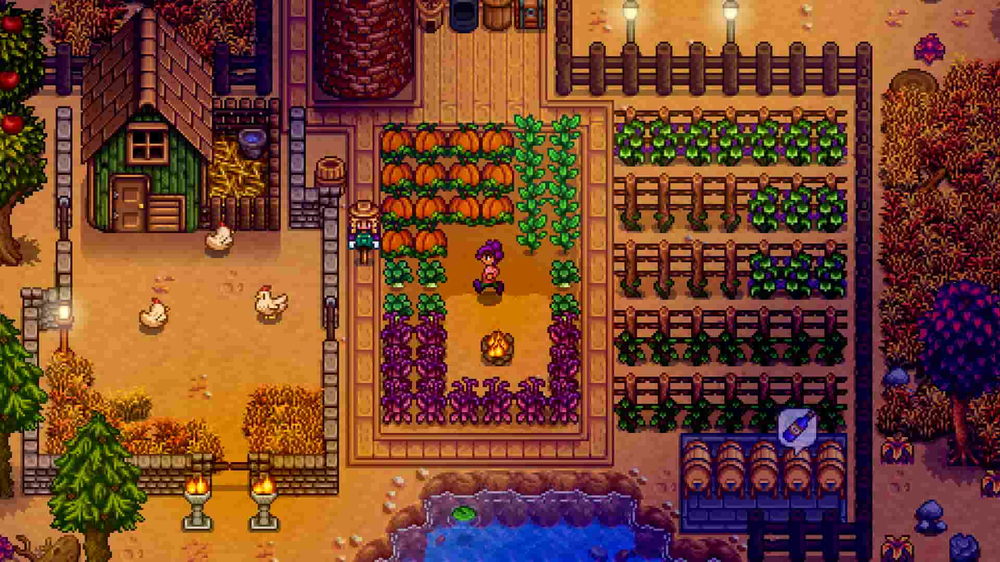

Hollow Knight
Uma viagem sombria e rica em detalhes, com um mundo amplo e muito misterioso.
Indie Vault
A Indie Vault reúne recomendações, análises rápidas e destaques de títulos que transformam criatividade em gameplay. Explore mundos pequenos, mas memoráveis.
Jogos que combinam identidade visual, mecânicas inventivas e histórias que ficam na cabeça.
Uma viagem sombria e rica em detalhes, com um mundo amplo e muito misterioso.

Baseada em precisão, personalidade e um texto emocional que toca profundamente.

Uma experiência acolhedora sobre rotina, comunidade e criação de um lugar próprio.
Além da diversão, o mercado indie valoriza experimentação, voz autoral e novas formas de narrar.
Os melhores achados costumam surgir em gêneros pouco explorados, por desenvolvedores com visão clara e estética muito forte.
Uma boa proposta indie muitas vezes se comunica por ambiente, música e sensação de descoberta antes mesmo da mecânica principal.
RPGs, puzzles, plataformas e roguelites independentes frequentemente entregam ideas mais ousadas do que grandes produções.